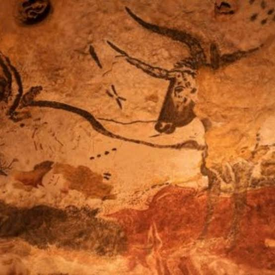
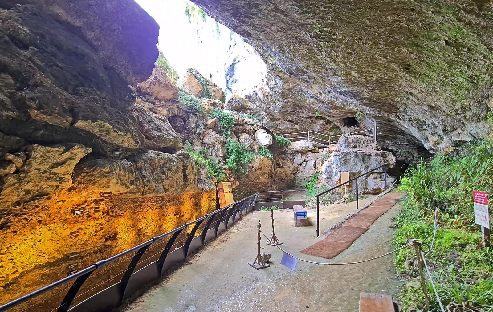

Grottes ornées
de la Vézère


⟹ Patrimoine Mondial UNESCO ⟸
La vallée de la Vézère, en Dordogne, concentre l'une des plus exceptionnelles concentrations de sites préhistoriques au monde. Sur quelques kilomètres seulement, plus de 150 gisements et une quinzaine de grottes ornées témoignent de plusieurs dizaines de millénaires d'occupation humaine, du Paléolithique moyen à la fin du Paléolithique supérieur.

C'est le 12 septembre 1940 que quatre adolescents, guidés par leur chien Robot, découvrent par hasard l'entrée de la grotte de Lascaux, en explorant les environs de Montignac. Ils y révèlent un ensemble de peintures et de gravures d'une qualité artistique exceptionnelle, vieilles d'environ 17 000 ans : chevaux, aurochs, cerfs et le célèbre panneau des taureaux, surnommé plus tard « la chapelle Sixtine de la préhistoire ».
En 1979, l'UNESCO inscrit l'ensemble des « Grottes ornées de la vallée de la Vézère » au patrimoine mondial, l'un des tout premiers sites français distingués. Ce classement englobe non seulement Lascaux, mais aussi Font-de-Gaume, les Combarelles, Rouffignac, Cap Blanc et de nombreux autres gisements et abris ornés de la vallée.
Ouverte au public dès 1948, la grotte de Lascaux dut être fermée en 1963 : le dioxyde de carbone exhalé par les visiteurs et la chaleur des éclairages avaient favorisé le développement de moisissures menaçant irrémédiablement les œuvres. Depuis, l'original reste inaccessible et fait l'objet d'une surveillance scientifique constante.
Pour permettre au public de découvrir ce chef-d'œuvre sans mettre en péril l'original, un premier fac-similé, Lascaux II, ouvre en 1983 à proximité de la grotte véritable. En 2016, Lascaux IV — Centre international de l'art pariétal voit le jour à Montignac : une reconstitution intégrale et immersive de la grotte, complétée par un parcours muséographique consacré à l'art préhistorique dans le monde.

Visite en famille : Lascaux IV propose des ateliers pédagogiques et des parcours adaptés aux enfants, avec initiation à l'art pariétal et à la fabrication de pigments.
Parcours immersif et numérique : le Centre international de l'art pariétal complète la visite de la grotte par une expérience en réalité virtuelle et des reconstitutions 3D d'autres grottes ornées du monde.
Randonnée dans la vallée : les sentiers longeant la Vézère permettent de relier plusieurs sites à pied ou à vélo, entre falaises calcaires, villages troglodytiques et bords de rivière.
La vallée de la Vézère invite à prendre le temps, entre villages de pierre blonde, sites troglodytiques et capitale mondiale de la préhistoire.
Les Eyzies-de-Tayac considérée comme la capitale mondiale de la préhistoire, elle abrite le Musée national de Préhistoire et plusieurs abris troglodytiques remarquables.
Montignac-Lascaux village pittoresque au bord de la Vézère, point de départ idéal pour la visite de Lascaux IV, avec ses maisons à colombages et ses berges aménagées.
La Roque Saint-Christophe impressionnante falaise habitée depuis la préhistoire, aménagée en village troglodytique sur plusieurs niveaux.
Sarlat-la-Canéda à proximité, capitale du Périgord Noir, avec son centre historique médiéval et son marché renommé.